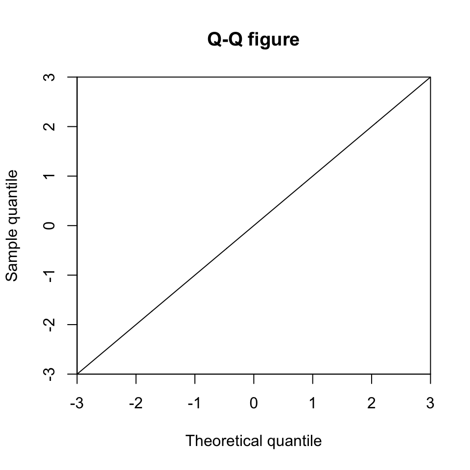
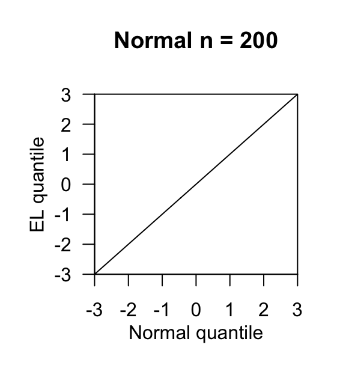

第 5 章 QQ图
5.1 绘制QQ图
5.1.2 手工绘制
- 基础工具plot绘制
par(mfrow=c(1,2))
plot(seq(-3,3,0.01), dnorm(seq(-3,3,0.01)),
xlab = 'x', ylab = 'f(x)',
ylim = c(0,0.5),
xaxs = 'i', yaxs = 'i', type = 'l')
plot(qnorm(seq(0,1,0.001)), seq(0,1,0.001),
xlab = 'x', ylab = 'F(x)',
xaxs = 'i', yaxs = 'i', type = 'l')x = seq(-3,3,0.01)
par(mfrow=c(1,1))
plot(x,x, main = 'Q-Q figure',
xlim = c(-3,3), ylim = c(-3,3),
xlab = 'Theoretical quantile', ylab = 'Sample quantile',
xaxs = 'i', yaxs = 'i',
type = 'l')
n = 200
x = seq(-3,3,0.01)
par(mfrow=c(1,1))
plot(x,x,
xlim = c(-3,3), ylim = c(-3,3),
xaxs = 'i', yaxs = 'i',
yaxt = 'n',
ann = F, type = 'l')
axis(2, las = 1)
title(main = paste0('Normal n = ',n),
xlab= 'Normal quantile', ylab = 'EL quantile',
line = 2)
5.2 一个例子
5.2.1 了解分位数。
# 生成一组数字，作为示例数据
set.seed(6666)
dat = sample(1:1000,15)
dat# 这些数据画在图上,横坐标没有意义,纵坐标代表dat的数值。
library(ggplot2)
p = ggplot(dat = as.data.frame(dat),aes(x = factor(1),y = dat))+
geom_point(aes(color = factor(dat),fill = factor(dat)),
size = 3.5,shape = 21,alpha = 0.5)+
labs(x = "")+
theme_bw()+
theme(legend.position = "none")
p # 四分位数，即可以将这组数据分成等量的四个部分的三个数。
quantile(dat)
## 0% 25% 50% 75% 100%
## 111 333 520 701 993# 三条线分别代表25% 50% 75% 的四分位数，与箱线图异曲同工。
p + geom_hline(yintercept = quantile(dat)[2:4],linetype = 4)
# 四分位数是最常见的，在此基础上可以扩展到百分位数，例如：
qk = quantile(dat,probs = seq(0, 1, length.out = 15))
qk
## 0% 7.142857% 14.28571% 21.42857% 28.57143% 35.71429% 42.85714% 50%
## 111 285 289 328 338 350 462 520
## 57.14286% 64.28571% 71.42857% 78.57143% 85.71429% 92.85714% 100%
## 558 611 612 790 847 926 993# 这是15个数字，所以分成了15份
p + geom_hline(yintercept = qk,linetype = 2)
5.2.2 数据准备
# 生成符合三种分布的数据，作为检验示例数据属于那种分布的参考。任何一个分布都可以。
library(patchwork)
df = data.frame(x = 1:100,
normal = dnorm(1:100,50,15),
uniform = dunif(1:100,1,100),
exponential = dexp(1:100,0.06))
head(df)
set.seed(1004);normal = rnorm(100,50,15)
set.seed(1004);uniform = 1:100
set.seed(1004);exponential = rexp(100,0.06)
rn = data.frame(x = 1:100,
normal = normal,
uniform = uniform ,
exponential = exponential )
head(rn)
## x normal uniform exponential
## 1 1 0.0001281199 0.01010101 0.05650587
## 2 2 0.0001589392 0.01010101 0.05321523
## 3 3 0.0001962978 0.01010101 0.05011621
## 4 4 0.0002413624 0.01010101 0.04719767
## 5 5 0.0002954566 0.01010101 0.04444909
## 6 6 0.0003600704 0.01010101 0.04186058
## x normal uniform exponential
## 1 1 40.88239 1 12.995556
## 2 2 61.51444 2 28.127434
## 3 3 47.53592 3 4.341248
## 4 4 49.56835 4 0.180288
## 5 5 50.20337 5 14.291344
## 6 6 39.26425 6 36.579238两个数据框，一个是符合某分布的某个数值大小的概率，一个是符合某分布的具体数值，两个数据框的二三四列分别是正态分布、均匀分布和指数分布。理解qq图可以帮助我们探索数据属于哪种分布。
5.2.3 三种分布的密度图
#1.正态分布
p1 = ggplot(df,aes(x = x,y = normal ))+
geom_line()+theme_classic()
#2.均匀分布
p2 = ggplot(df,aes(x = x,y = uniform ))+
geom_line()+theme_classic()
#3.指数分布
p3 = ggplot(df,aes(x = x,y = exponential ))+
geom_line()+theme_classic()
p1+p2+p3
5.2.4 画出15个分位数
qn = apply(rn,2,function(x){
quantile(x,probs = seq(0, 1, length.out = 15))
})
qn[,1] = 1:nrow(qn)
qn = data.frame(qn)
qp = function(p,nc){
a = p
n = c()
for(i in 1:nrow(qn)){
n[[i]] = qn[i,nc]
a = a + geom_vline(xintercept = n[[i]],color = "red",size = 0.3,alpha = 0.3)
}
return(a)
}
qp(p1,2)+qp(p2,3)+qp(p3,4)
5.2.5 绘制qq图
# 15个数据实在太少，比较不同分布时不够明显，所以扩展到100个。
dat = sample(1:1000,100)
qn$nk = quantile(dat,probs = seq(0, 1, length.out = 15))
qq = function(k){
ggplot(data = qn,aes_string(x = colnames(qn)[k],y = "nk"))+
geom_point()+
geom_smooth(method = "lm",se = F)+
theme_bw()
}
qq(2)+qq(3)+qq(4)
上面画参考线的方法直接按照线性拟合来画了。qqline函数是将上下四分位数连线作为参考线的。
哪种分布作为横坐标画出的qq图更接近一条直线，数据就更接近哪种分布。


5.3 参考资料
- 网站：简书。QQ图的理解和绘制
- 网站：CNSD。qq图
- Lane, D.M. eBook。Introduction to Statistics